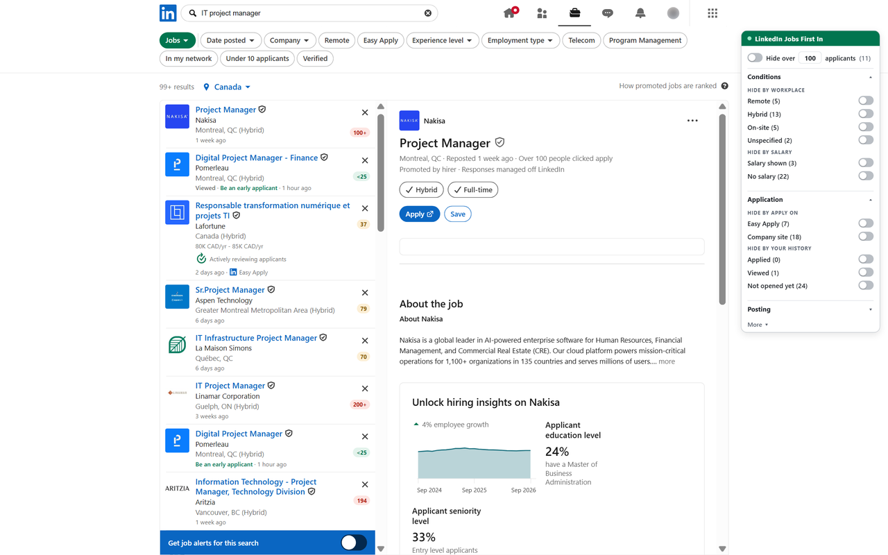

See how crowded a job is before you click.
First In is a Chrome extension that puts the applicant count on every job in LinkedIn search, and hides the ones you do not want to see.

What it does
- Applicant count on every job card: green under 25, amber 25 to 100, red over 100.
- Hide every job over the limit you choose.
- Filter by workplace, salary shown or not, Easy Apply or company site, and jobs you already viewed or applied to.
- Promoted and reposted jobs are marked as LinkedIn reveals them.
- Every filter shows how many jobs on the page it concerns.
What it does not do
- It never applies, saves, dismisses or messages. It only reads the page you are looking at.
- It sends nothing to us. Your counts and settings stay in your browser.
Good to know
Works with LinkedIn set to English, French, Spanish or German. LinkedIn limits how fast job pages can be read; First In stays under that limit, so on a busy page a few counts can take a moment to appear.